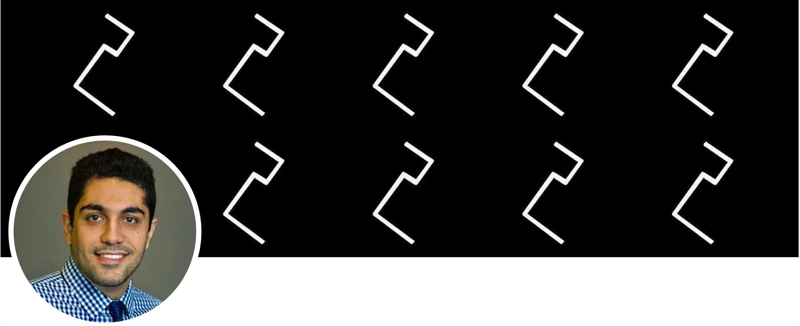

Sajjad Arshad
Android Security @Google
Biography
I hold a PhD in Cybersecurity from Northeastern University (Boston, MA) where I was working under supervision of William Robertson and Engin Kirda at Systems Security Lab (NEU SecLab). I received my BS and MS in Computer Engineering from University of Tehran and Shahid Beheshti University, respectively. Currently, I am working at Google (Mountain View, CA) as a Security Software Engineer (SWE++), where I am fighting Android Malware.
My research is concerned with improving the security of computer systems through application of secure design principles and integration of defensive techniques such as attack detection, prevention, and recovery. Some domains I am active in are conducting web security & privacy measurement, static & dynamic program analysis, binary analysis (e.g, reverse engineering, exploit development), and malware detection (e.g., Botnet, Ransomware).
Specifically, my research focuses on large-scale web security measurement, primarily using browser instrumentation and distributed crawling. I am the founder of the DeepCrawling (Crawlium), an evolutionary crawling platform based on Chrome (Chromium) browser that provides a deeper look into the ecosystem of content inclusion on the Web. I have also participated in a number of CTF competitions, and have published several "technical" writeups in PersianCats.
Research Interests
Web Security & Privacy
Android Security
Malware Detection (Botnet, Ransomware, Android)
Binary Analysis (Reverse Engineering, Exploit Development, CFI)
Applied Machine Learning
Publications
HotFuzz: Discovering Algorithmic Denial-of-Service Vulnerabilities Through Guided Micro-Fuzzing
William Blair, Andrea Mambretti, Sajjad Arshad, Michael Weissbacher, William Robertson, Engin Kirda, Manuel Egele
Network and Distributed System Security Symposium (NDSS)
San Diego, CA, USA, February 2020
Cached and Confused: Web Cache Deception in the Wild
Seyed Ali Mirheidari, Sajjad Arshad, Kaan Onarlioglu, Bruno Crispo, Engin Kirda, William Robertson
USENIX Security Symposium
Boston, MA, USA, August 2020
A Longitudinal Analysis of the ads.txt Standard
Muhammad Ahmad Bashir, Sajjad Arshad, Engin Kirda, William Robertson, Christo Wilson
ACM Internet Measurement Conference (IMC)
Amsterdam, Netherlands, October 2019
Understanding and Mitigating the Security Risks of Content Inclusion in Web Browsers
Doctor of Philosophy (PhD) Thesis
Khoury College of Computer Sciences, Northeastern University
Boston, MA, USA, April 2019
On the Effectiveness of Type-based Control Flow Integrity
Reza Mirzazade farkhani, Saman Jafari, Sajjad Arshad, William Robertson, Engin Kirda, Hamed Okhravi
Annual Computer Security Applications Conference (ACSAC)
San Juan, Puerto Rico, USA, December 2018
How Tracking Companies Circumvented Ad Blockers Using WebSockets
Muhammad Ahmad Bashir, Sajjad Arshad, Engin Kirda, William Robertson, Christo Wilson
ACM Internet Measurement Conference (IMC)
Boston, MA, USA, October 2018
How Tracking Companies Circumvent Ad Blockers Using WebSockets
Muhammad Ahmad Bashir, Sajjad Arshad, Engin Kirda, William Robertson, Christo Wilson
IEEE S&P Workshop on Technology and Consumer Protection (ConPro)
San Francisco, CA, USA, May 2018
Large-Scale Analysis of Style Injection by Relative Path Overwrite
Sajjad Arshad, Seyed Ali Mirheidari, Tobias Lauinger, Bruno Crispo, Engin Kirda, William Robertson
The Web Conference (WWW)
Lyon, France, April 2018
(Honorable Mention)
Practical Challenges of Type Checking in Control Flow Integrity
Reza Mirzazade farkhani, Sajjad Arshad, Saman Jafari
IEEE Secure Development Conference (SecDev) Poster Session
Boston, MA, USA, September 2017
Thou Shalt Not Depend on Me: Analysing the Use of Outdated JavaScript Libraries on the Web
Tobias Lauinger, Abdelberi Chaabane, Sajjad Arshad, William Robertson, Christo Wilson, Engin Kirda
Network and Distributed System Security Symposium (NDSS)
San Diego, CA, USA, February 2017
"Recommended For You": A First Look at Content Recommendation Networks
Muhammad Ahmad Bashir, Sajjad Arshad, Christo Wilson
ACM Internet Measurement Conference (IMC)
Santa Monica, CA, USA, November 2016
Identifying Extension-based Ad Injection via Fine-grained Web Content Provenance
Sajjad Arshad, Amin Kharraz, William Robertson
International Symposium on Research in Attacks, Intrusions and Defenses (RAID)
Paris, France, September 2016
Tracing Information Flows Between Ad Exchanges Using Retargeted Ads
Muhammad Ahmad Bashir, Sajjad Arshad, William Robertson, Christo Wilson
USENIX Security Symposium
Austin, TX, USA, August 2016
UNVEIL: A Large-Scale, Automated Approach to Detecting Ransomware
Amin Kharraz, Sajjad Arshad, Collin Muliner, William Robertson, Engin Kirda
USENIX Security Symposium
Austin, TX, USA, August 2016
Include Me Out: In-Browser Detection of Malicious Third-Party Content Inclusions
Sajjad Arshad, Amin Kharraz, William Robertson
International Conference on Financial Cryptography and Data Security (FC)
Barbados, February 2016
Alert Correlation Algorithms: A Survey and Taxonomy
Seyed Ali Mirheidari, Sajjad Arshad, Rasool Jalili
Symposium on Cyberspace Safety and Security (CSS), Springer, vol 8300, pp 183-197
Zhangjiajie, China, November 2013
A Comprehensive Approach to Abusing Locality in Shared Web Hosting Servers
Seyed Ali Mirheidari, Sajjad Arshad, Saeidreza Khoshkdahan, Rasool Jalili
IEEE Conference on Trust, Security and Privacy in Computing and Communications (TrustCom)
Melbourne, Australia, July 2013
Comparison of Routing Protocols in Mobile Ad-Hoc Wireless Networks
Sajjad Arshad, Abbas Naderi
Journal of AWERProcedia Information Technology and Computer Science, vol 3, 2013
Two Novel Server-Side Attacks against Log File in Shared Web Hosting Servers
Seyed Ali Mirheidari, Sajjad Arshad, Saeidreza Khoshkdahan, Rasool Jalili
IEEE Conference for Internet Technology and Secured Transactions (ICITST)
London, UK, December 2012
Performance Evaluation of Shared Hosting Security Methods
Seyed Ali Mirheidari, Sajjad Arshad, Saeidreza Khoshkdahan
IEEE Conference on Trust, Security and Privacy in Computing and Communications (TrustCom)
Liverpool, UK, June 2012
An Anomaly-based Botnet Detection Approach for Identifying Stealthy Botnets
Sajjad Arshad, Maghsoud Abbaspour, Mehdi Kharrazi, Hooman Sanatkar
IEEE Conference on Computer Applications and Industrial Electronics (ICCAIE)
Penang, Malaysia, December 2011
A Disk Scheduling Algorithm Based on ANT Colony Optimization
Hossein Rahmani, Sajjad Arshad, Mohsen Ebrahimi Moghaddam
ISCA Conference on Parallel and Distributed Computing and Communication Systems (PDCCS)
Louisville, KY, USA, September 2009